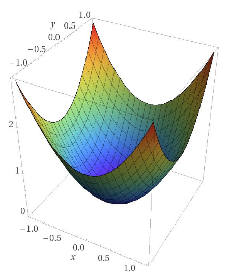
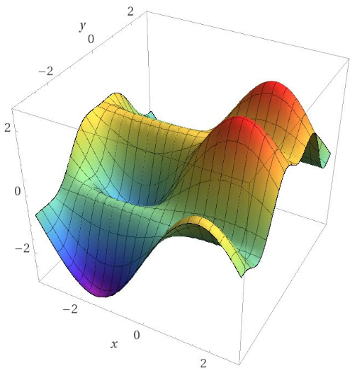
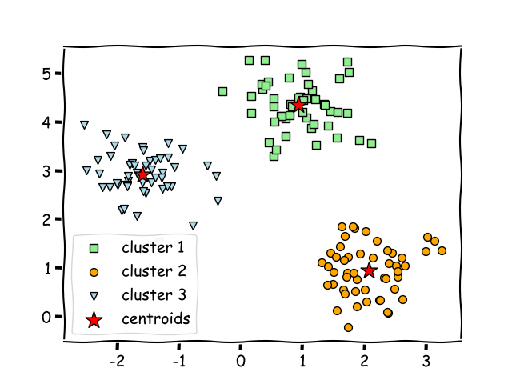
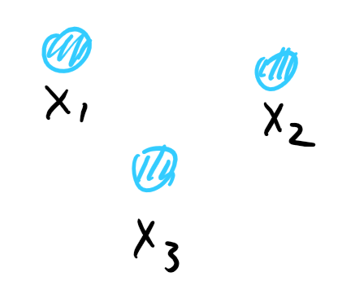
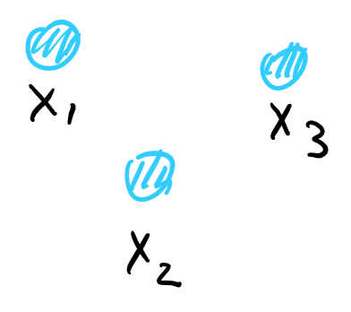
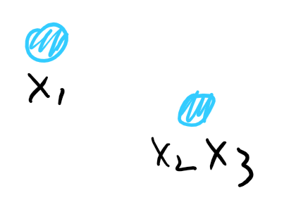
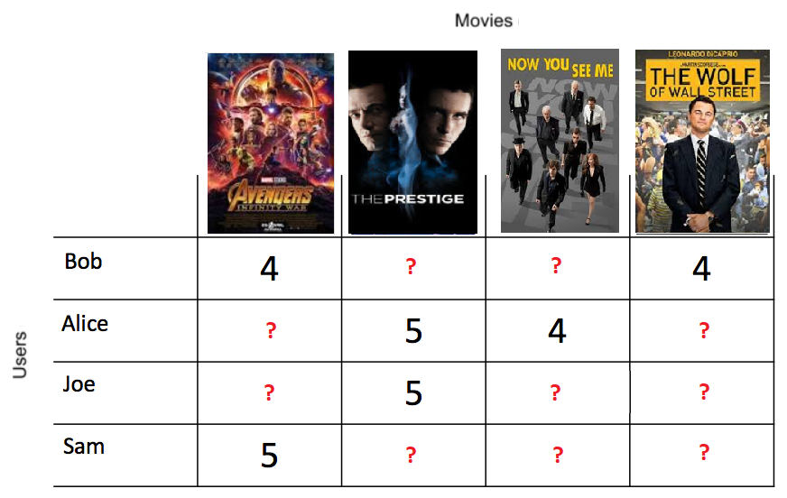
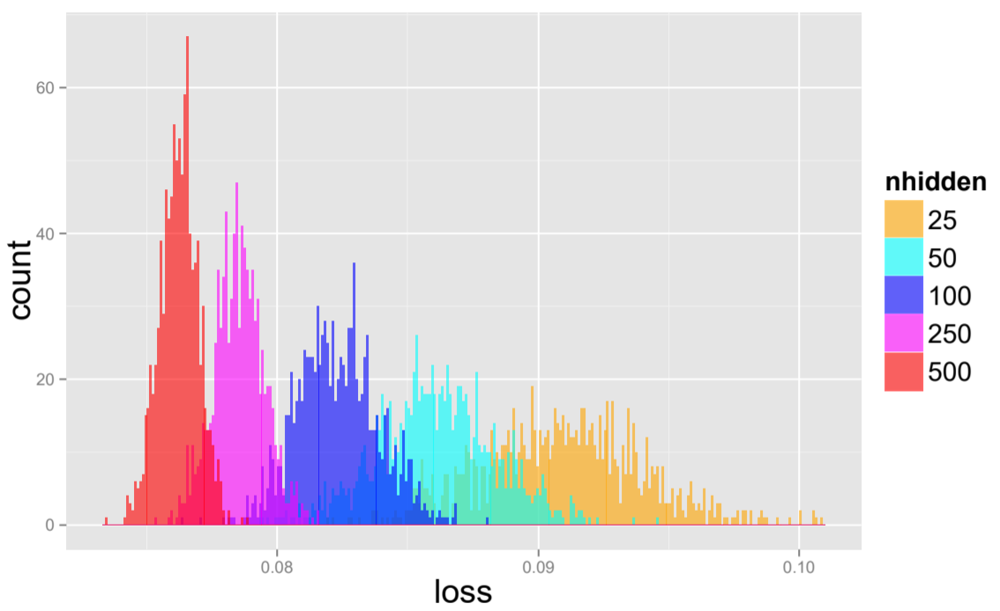

Optimization
Landscape Symmetry, Saddle Points and Beyond
Non-convex Optimization
Proabilistic Models,
Deep Neural Nets
Theory :
NP-hard . Better avoid or use convex relaxation.
Practice : Easy! just run SGD.
In practice, these algorithms converge to good solutions.
Gradient Descent
$$
x_{t+1} = x_t - \eta\nabla f(x_t)
$$
Converges to stationary point ($\nabla f(x_t)=0$)
[Nesterov ‘98]
or “local minimum” [[Ge etal. ‘15]][GHJY15]
GD cannot escape from a local optimal solution
Landscape
Convex Functions

Simple: 0 gradient → Global Minimum
Can be optimized efficiently
Non-Convex Functions

Complicated: local minima, saddle points
GD can only find a local minimum
What special properties make a non-convex function easy?
Why are the objectives always non-convex?
Symmetry → Non-Convexity
Problem asks for multiple components, but the components have no ordering .

The neurons in a layer of neural network can be permuted and still compute the same function.

Solution (a)

Solution (b)

Convex Combination (a+b)/2
if the objective is convex, then the third solution is also convex
10 min mark
Optimization algorithms need to break the symmetry and converge to one of the (equivalent) local minima.
Symmetry → Non-Convexity
$$f(x) = -\|x\|^2 + \|x\|_4^4$$
This construction is used in independent component analysis
Four local/global minima (symmetric)
Connection two adjacent local minima
Can we add constraints to break the symmetry?
Rotate and restrict in the first quadrant.
This will add new local minima.
Locally Optimizable Functions
Local min are symmetric versions of global min
No high order saddle points
high order saddle points have zero grads and p.s.d. hessian
SGD garanteed to find the global minima
first condition seems to be very strong
SVD/PCA
Generalized Linear Model [KKKS'11] [HLS'14]
Synchronization [BVS'16]
Dictionary Learning [SQW'17]
Matrix Completion [[GLM16]] [[GJZ17]]
Matrix Sensing [BNS'16] [PKCS'16]
MAX-CUT [MMMO'17]
Tensor Decomposition [GHJY'15] [GM'16]
2-Layer Neural Net [[GLM17]]
Matrix completion as a simple example
Landscape of neural networks
Matrix Completion
Low rank matrix $M$
Observations: entries of $M$
Goal: recover remaining entries

typical application: recommendation system [RennieSrebro05]
assume matrix is a product of two $n\times r$ matrix
Hope to recover using $\tilde O(nr)$ observations.
Non-Convex Objective
Idea: Try to find the low rank factors directly $$M=U\cdot V^T$$
Variables $X$, $Y$. Hope $X = U, Y = V, M = XY^T$
Uniform observations $(i, j)\in\Omega$
Minimize “loss” on observed entries $$\min f(X, Y) = \sum_{(i,j)\in\Omega}(M_{i, j} - (XY^T)_{i,j})^2$$
Symmetry and Solutions
$$M=UV^T\qquad \min(f(X, Y):=\|M-XY^T\|^2_\Omega)$$
Hope: $X=U, Y=V$
Not true: many equivalent solutions: $$UV^T=URR^TV^T$$
Saddle points: e.g. $X=Y=0$
The objective behaves similar to a norm
Theorem : when the number of observations is at least $\tilde{\Omega}(nr^6)$, all local minima of $f(X, Y)^*$ are global minima: satisfy $XY^T=M$.
[GLM16 ]: symmetric case; [GJZ17 ]: asymmetric case
Corollary : Simple SGD can solve matrix completion from an arbitrary starting point.
Prior work:
convex relaxation
non-convex optimization with carefully chosen starting point
convex relaxation: has tight $r$ $\Omega(nr poly(\log(d))$ d is #observations
non-convex: $nr^2$
27 min mark
$X$ is a local minimum of $f(X)$ → $\nabla f(X)=0, \nabla^2f(X)\succcurlyeq 0$
$$\nabla f(X)\ne 0$$
Follow gradient reduces $f(X)$.
$$\lambda(\nabla^2f(X))<0$$
Min eigendirection of Hessian reduces $f(X)$.
Direction of Improvment Exists
If $X$ is not global minimum
Exists $\Delta$, $\langle\nabla f(X), \Delta\rangle\ne 0$ or $\nabla^2f(X)[\Delta]<0$
Matrix Factorization
Every entry is observed, want to write $M=UV^T$
Consider symmetric case: $M=UU^T$ $$g(X):=|M-XX^T|_F^2$$
Goal: prove local minima satisfy $XX^T=M$.
$\nabla g(X)=0$
→ $MX=XX^TX$
→ If $\text{span}(X)=\text{span}(M)$, $M=XX^T$
$\nabla^2 g(X)\succcurlyeq0$
→ $\text{span}(X)=\text{span}(M)$
Approach in [GLM16 ]. Need more cases to work for Matrix Completion.
$X$ is a full-rank matrix == span(X) = span(M) (span of column vectors)
for the case X is not full rank, for example X=0, gradient = 0
Intuitively, want $X$ to go to the optimal solution $U$.
Recall: many equivalent optimal solutions!
Idea: find the “closest” among all optimal solutions $$\Delta = X-UR, \qquad R=\arg\min||X-UR||_F$$
Nice property: $||\Delta\Delta^T||_F^2\le2||M-XX^T||_F^2$
Alternative approach finding direction of improvement
If $\Delta$ is not zero, $X$ is not global optimal
Main Lemma [GJZ17 ]
Lemma : If $\|\Delta\Delta^T\|_\Omega^2<3\|M-XX^T\|_\Omega^2$, then either $\langle\nabla f(X), \Delta\rangle\ne 0$ or $\nabla^2 f(X)[\Delta]<0$. ($\Delta$ is a direction of improvement.)
$||\Delta\Delta^T||_F^2\le2||M-XX^T||_F^2$
Immediate proof for matrix factorization
For completion, proof works as long as $||A||_\Omega\approx ||A||_F$ for $\Delta\Delta^T$ and $M-XX^T$
$\Delta\Delta^T$ and $M-XX^T$ are both low rank.
characterizes matrices which are nearly orthonormal, at least when operating on sparse vectors.
Applies to asymmetric cases, matrix sensing and robust PCA.
Locally optimizable problems
Low rank matrix
SVD/PCA, Matrix Completion, Synchronization, Matrix Sensing, GLM, MAX-CUT
Low rank tensor
Dictionary Learning, Tensor Decomposition, 2-Layer Neural Net
Optimization landscape for neural network
$$
g_W(x) = \sigma(W_p\sigma(W_{p-1}\sigma(\cdots \sigma(W_1x)\cdots)))
$$
$$
f(W) = \mathbb E[\|y - g_W(x)\|^2]
$$
Fully connected with ReLU
40 min mark
Teacher/Student Setting
Goal: Prove sth about optimization
Assume there is already a good network ($W^*$) and enough samples
Good solution: student mimic teacher
Make sure that the hypothesis class can recover the solution
Focus on optimization
Linear Networks
$$
g_W(x) = W_pW_{p-1}\cdots W_1x
$$
[Kawaguchi 16 ], [YSJ18 ]
All local minima of linear neural network (with squared loss) are global*
With 2 layers, no higher order saddle points.
With 3 or more layers, has higher order saddles.
All methods rely on different assumptions. Not comparable and not clear whether the assumptions are necessary
For a critical point, if product of all layers has rank $r$, then it is a local and global minima (if r = min(m, n)) it can also be a normal saddle point (if r < min(m, n)).
Open problem: does local search actually find a global minimum?
min(m, n) the maximum rank we can get
Algorithm can be trapped in higher order saddles
Two-Layer Neural Network
$$
g(x) = a^T\sigma(Bx)
$$
Wlog: rows of $B$ ($b_i$) are unit norm.
Data: $x\sim N(0, I)$, $y$ from a teacher.
Some more technical assumptions on a*, B*
most importantly, $B^*$ is full-rank
Bad local minima
Claim: The objective function $f(a, B)$ has local minima that are not equivalent to the ground truth.
Over-parametrization appears to drastically reduce such local minima
Landscape Design
Idea: Design a new objective with no bad local min.
Implicit in many previous techniques
Regularization
Methods-of-moments instead of MLE
Provable New Objective
Theorem [GLM17 ]: Can construct an objective for two-layer neural network such that all local minima are global*
Objective inspired by tensor decomposition
Relies on Gaussian distribution
Extended to symmetric input distribution* by [GKLW18 ]
There are some assumptions for gloabl* to be hold
Theorem [GKLW18 ]: For a two-layer neural network with more outputs than hidden units, if the input distribution is symmetric, there is a polynormial time algorithm that learns the neural network
Theorem [[GWZ19]]: For a 2/3-layer neural network with quadratic/polynormal activations, if the inputs are in general position, and
#parameters = O(1) #training samples
GD can memorize training data.
Spin Glass Model
Claim [CHMBL15 ]: all the local minima of a neural network have approximate equal function value

$$
\int_x\mathbb E[|\det(\nabla^2 f)|\cdot \mathbf 1(\nabla^2 f\preceq0)\mathbf 1(x\in Z)|\nabla f(x)=0]p_{\nabla f(x)}
$$
Proof idea: Count number of local min directly
Evaluate the formula using random matrix theory
Formal for spin-glass model (random polynormials), informal connection with NNs.
Formal results for overcomplete tensor and tensor PCA
Kac-Rice formula can be used to compute #local minima in any region
In some cases, Hess and grad will be nice random matrices
Dynamics/Trajectory
Main idea: instead of analyzing the global landscape, analyze the path from a random initialization.
Observation: path can be very short
Empirical Risk/Training Error
[Du, Zhai, Poczos, Singh] Two-layer
[Allen-Zhu, Li, Song] [Du, Lee, Li, Wang, Zhai] [Zou, Cao, Zhu, Gu] Multi-layer/ResNet
[Allen-Zhu, Li, Song] Recurrent Neural Network
Population Risk/Test Error
[Li Linag] Special multiclass classification
[Allen-Zhu, Li, Liang] 2 or 3 layer neural network. “Kernel-like” setting, special activation
Suppose your model is over-parametrized, it can overfit to your data
Considering generalization is harder.
Kernel-like means the neural net is approximable using low-degree polynomials
and requires special activation
Accelerated methods are faster but leads to slightly worse generalization.
GD has an innate bias towards finding solutions with good generalization
Methods to speed up gradient descent (e.g., acceleration or adaptive regularization) can sometimes lead to worse generalization.
We need to develop a new vocabulary (and mathematics) to reason about trajectories. This goes beyond the usual “landscape view” of stationary points, gradient norms, Hessian norms, smoothness etc
Finding a global minimum is not always good enough (trajectory/implicit bias)
Optimization is easy (linear) in highly overparametrized regime
How many parameters do we need?